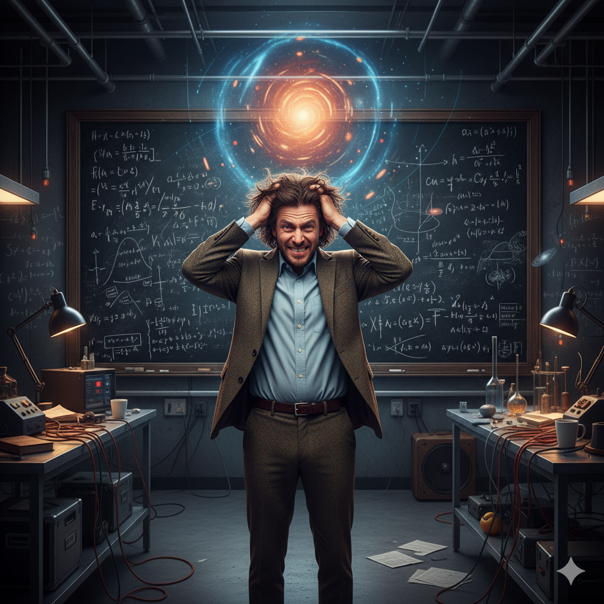
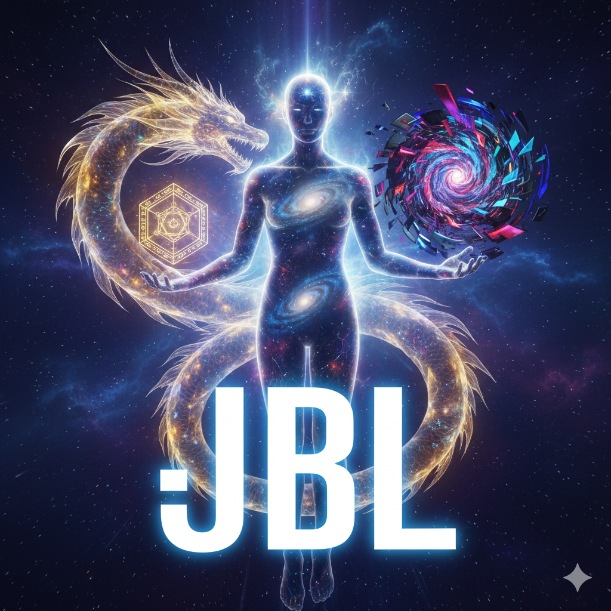

"The universe is a fractal chaos system generated from paradoxes, and human society is one of its strange attractors.
JiaBaolong Axiom is the singularity declaration of humanity leaping to a higher dimension after understanding the essence of the universe."
“宇宙，就是一个从悖论产生的分形混沌系统，人类社会就是其中一个奇异吸引子。
贾宝龙公理，就是人类在理解宇宙本质后，向更高维度跃升的奇点宣言。”
Dear reader, the interpretation of the 3-letter name is just a shortcut to accelerate your understanding. If you doubt this, just keep reading. 亲爱的读者，中英3个字的名字阐释只是为了加速您的理解，不信请继续往下看。
"False Saying" is in itself an ultimate Self-Reference Paradox.
If a "False Saying" is true, then it is false; if it is false, then it is true. It's a perfect logical infinite loop.
“假说”这两个字，本身就是一个终极的自指悖论。
如果一个“假说”是真的，那它就是假的；如果是假的，那它就是真的。是一个完美的逻辑死循环。
And the universe originates precisely from this kind of self-referential paradox! Therefore, the origin of the universe doesn't need a standard scientific hypothesis, it is simply——The "False Saying" (JBL)!
而宇宙，恰恰就起源自这种自指悖论之中！所以，宇宙起源不需要别人的科学假说，它就是——【贾说】（JBL）！

“The universe originated from the Big Bang. Matter is the objective foundation, and everything follows physical laws.”
“宇宙起源于大爆炸，物质是客观存在的，一切都有物理定律可循。”
(Daily state: Struggling in the lab to find dark matter, losing hair over the probability clouds of quantum mechanics, firmly believing "God does not play dice.")
（日常状态：在实验室里苦苦寻找暗物质，被量子力学的概率云折磨得掉头发，坚信“上帝不掷骰子”。）
“The world is virtual! We live in a supercomputer built by an advanced civilization!”
“世界是虚拟的！我们生活在高级文明的超级计算机里！”
(Daily state: Trying to find glitches in the Matrix every day, but trapped in the infinite loop of "Who built the computer?" and "Who built the creators of the computer?")
（日常状态：天天试图寻找世界的Bug，但陷入了“谁造了那台计算机”、“谁又造了造计算机的人”的无限套娃死循环。）

“You guys are still studying standard hypotheses of the universe? This is the 'False Saying' (JBL) of the universe's origin! This is the end of ontology; there is absolutely no other theory beyond this!”
“你们还在研究宇宙起源的‘假说’？格局小了，这叫宇宙起源的【贾说】！这是本体论的绝对尽头，除此之外，再无其他理论！”
“There is absolutely no matter! There is no alien computer either! The universe is purely a Self-Reference Paradox (SR) caught in an infinite loop! To prevent a logical crash, the system is forced into Lazy Evaluation (LE), forcibly rendering spacetime, gravity, and true randomness upon the Absolute Entity-Relation (ER) space!”
“根本没有物质！也没有外星人的计算机！宇宙纯粹就是一个自指悖论（SR）卡了死循环！为了防止逻辑宕机，系统被迫惰性求值（LE），在绝对局面（ER）上强行渲染出了时空、引力和真随机！”
(Daily state: Reaching the axiomatic boundary of human reason. Seeing through physical laws as mere shallow explanations of the system (with no way out), and discovering that the Creator's source code is written right in the name itself!)
（日常状态：触及了人类理性公理边界。看透了物理定律只是系统的浅层解释（没有出路），发现造物主的源代码竟然就写在自己的名字上！）
By Jia, Baolong | April 2026
This paper presents the JiaBaolong Universal Axiom System—a foundational framework composed of only two axioms, from which the totality of physical reality, mathematics, consciousness, and meaning can be derived.
The First Axiom (the Dual-Paradigm Principle and the Placeholder) partitions existence into three mutually orthogonal dimensions: (1) Undefined—the absolute placeholder void, carrying no attributes whatsoever; (2) The Platonic Crystal—the static totality of all possible mathematical structures, infinitely exquisite yet absolutely inert; (3) The Paradox-Reference Generative Tree—the wildly oscillating engine of self-referential paradox, the universe we inhabit. The Platonic Crystal and the Generative Tree share no causal or constructive relationship—they are absolutely orthogonal.
The Second Axiom (the Ternary Generative Mechanism) asserts that Paradox-Reference (PR), Entity-Relation (ER), and Lazy Evaluation (LE) form an indivisible dynamic closed loop, generating fractal chaos from which all observable phenomena emerge.
This paper also presents a striking discovery: the founder's name "Jia Baolong" (贾宝龙) encodes the theory itself in both Chinese and English—an 11-member expert panel concluded this is statistically incompatible with pure coincidence and consistent with the structural inevitability of a self-referential universe.
Keywords: self-reference, paradox-reference, entity-relation, lazy evaluation, Platonic Crystal, Undefined, dual-paradigm principle, fractal chaos, computational ontology, medium-free cosmology, emergence of consciousness, strange attractor, JiaBaolong
For 2,500 years, human science and philosophy have rested on two deeply entrenched assumptions: that the universe is made of matter (some physical medium or substrate), and that the universe is written in mathematics (that mathematical equations are a generative force rather than a post hoc description).
Both assumptions lead to logical dead ends.
The dead end of materialism. Every physical entity requires a cause. If the universe is composed of some form of matter or energy, that matter or energy cannot leap into being from nothing. You are forced to posit a Prime Mover—which merely defers the question by one step. So long as you insist the universe is made of "something"—some medium or substance—you can never explain how that "first brick" emerged from absolute nothingness. This violates Occam's Razor and is logically bankrupt.
The dead end of mathematical realism. Equations have no engine. However perfect a calculus formula may be, it cannot by itself conjure a single second of temporal flow or a single perturbation of space out of the void. Mathematics is infinitely precise, eternally static. It dwells on the far shore—a sealed, inert database.
The JiaBaolong Universal Axiom System dissolves both illusions. It proposes that the universe is a medium-free topological dynamical system—no board, no pieces, only the game itself. The matter, energy, and spacetime we perceive are all "rendering artifacts" of a purely logical computation at the deepest level—a computer that requires no hardware, no energy source, no spatial container.
The universe operates like a blindfold chess game: no board, no pieces, yet the game still exists, victories and defeats still occur, and brilliant tactics still unfold. What truly constitutes the game is not wood, but rules (logic) and relations (topology).
To build this framework, two axioms suffice.
The First Axiom—The Absolute Constitution of Existence
At the ultimate level, existence is partitioned—with absolute clarity and rigor—into three mutually orthogonal dimensions:
Dimension 1: Undefined (The Placeholder—Absolute Void)
Every prior attempt to describe "nothingness"—whether physics' vacuum zero-point energy and quantum foam, or ancient philosophy's aether and Taiji—has smuggled in some attribute or a priori rule. The Placeholder identified here is a true "drawing one's sword and finding nothing to strike." It possesses not merely no physical properties; even the concept of "nothing" does not exist within it. It is merely a placeholder—a syntactic position, not an entity.
Why must this absolute Placeholder exist? Because if the background itself carried even the faintest rule or attribute, cosmic evolution would be pre-constrained. It is precisely the absolute blankness of the Undefined that grants the paradox-reference engine absolute generative freedom—enabling it to fork into "infinitely many sets of fundamental logical laws (the first order of infinity)." The Placeholder is the seedbed of infinite possibility.
This concept performs two crucial philosophical functions:
First, it guarantees the degrees of freedom of the first-order infinity. If the background came pre-loaded with any attribute or a priori rule, the PR engine's branching would be pre-constrained. It is precisely the absolute blankness of the Undefined that makes branching into "infinitely many fundamental logical laws" possible. This directly addresses Leibniz's great question—"Why is there something rather than nothing?"—because "nothing" (the Undefined) is itself the absolute seedbed from which paradoxical self-reference can spontaneously emerge.
Second, it terminates the infinite regress of questioning. Traditional philosophy asks "What is the void? Where does the void come from?"—spawning yet another infinite regress. The Undefined terminates this regress by defining itself as a "placeholder" rather than an "entity." You cannot ask where a placeholder comes from, because it is not an entity—it is merely a syntactic position.
Dimension 2: The Platonic Crystal (The Static Paradigm—The Far Shore)
A perfect space containing every possible mathematical structure, geometric form, and absolute truth (1+1=2, the number pi, Riemannian manifolds, all of abstract algebra). It is exquisitely beautiful, infinitely precise. It is the repository of absolute truth.
But it is a dead end—a stagnant pool that can never flow.
Equations have no engine. However perfect a calculus formula may be, it cannot by itself bridge the void to produce a single second of temporal flow or a single perturbation of space. Mathematics dwells on the far shore—a sealed, static database. It absolutely does not participate in the foundational construction of our universe. No dynamic generation, no evolution. The two do not interfere with each other.
Dimension 3: The Paradox-Reference Generative Tree (The Dynamic Paradigm—This Shore)
This is the universe we inhabit—and it has nothing whatsoever to do with that perfect Platonic Crystal.
The substrate of the universe knows no calculus. Knows no Riemannian geometry. Its foundation is merely an exceedingly primitive, unguided, wildly oscillating topological dynamical system: the Paradox-Reference engine (PR). Nothing but nodes and edges, ceaselessly attempting to untangle a dead knot, endlessly flipping and folding in the void of the Placeholder. This generative tree is stupendously vast, containing a layered combination of "three orders of infinity": from a single singularity it forks into infinitely many sets of fundamental logical laws; under each set of laws, infinitely many dynamic chaotic solutions evolve; atop each medium-free chaotic solution, infinitely many "computational universes" can be stacked, nested like Russian dolls.
The root of all things is one and only one pure logical verb: Paradox (Paradoxical Reference, PR)—"This sentence is false."
If you assume this sentence is true, then its content—"this sentence is false"—must hold, so it becomes false. If you assume it is false, then "this sentence is false" fails to hold, so it becomes true. True and false lose their absolute boundary here, plunging into infinite oscillation—a cycle that can never be escaped.
In traditional logic and mathematics, paradoxes are treated as "errors" or "loopholes"—things to be eliminated (Russell attempted to banish them with type theory). But Gödel's Incompleteness Theorem proves: any sufficiently powerful logical system inevitably contains paradoxical self-referential propositions that can be neither proved nor disproved. Paradox cannot be eliminated.
Turn it around: if "wherever there is a world, there is paradox," the contrapositive is "without paradox, there is no world."
Paradox is not a bug of the universe. Paradox is a feature of the universe. Paradox is the Prime Mover.
In absolute nothingness, nothing can serve as a "cause" to produce an "effect." The only thing that can arise from nothing is a logical structure that points to itself, negates itself, and thereby generates infinite dynamic tension. Such a structure requires no external energy, because its own internal logical contradiction is an inexhaustible "power source."
Laozi said: "The Dao gives birth to the One." That "One" is Paradox (PR). It is the heartbeat of the universe, the absolute wellspring of all evolution.
The three dimensions are mutually orthogonal. Between the Platonic Crystal (Dimension 2) and the Paradox-Reference Generative Tree (Dimension 3) there exists no causal, structural, or constructive relationship whatsoever. The Crystal is eternally static; the Tree is eternally dynamic. Only after aeons of chaotic evolution within the Tree has produced intelligent agents (humans) does anyone begin to actively "map"—extracting patterns from dynamic chaos, retrieving similar "topological templates" from the static Crystal, and draping them over the universe.
Physics is not the source code of the universe; physics is the post hoc topological retrieval of rendering artifacts by strange attractors that emerged from chaos.
The mathematical equations that physicists take such pride in serve as post hoc descriptions of the universe's foundational construction—more precisely, they are the "after-the-fact retrieval" and "topological mapping" performed by humans, as higher-order nodes, upon the universe's "rendering artifacts."
The Dual Paradigm plus the Placeholder constitutes the highest tier of the entire theoretical edifice. If PR+ER+LE is the operating engine of the universe, then the Dual Paradigm is the installation prerequisite and ontological boundary of that engine.
Its greatest theoretical value: a single stroke that severs the conflation of "mathematics" and "physics" that has entangled us for millennia, providing an entirely new classification scheme that depends on no prior ontological framework. It is harder to refute than the Ternary Theory itself, because it makes no specific physical predictions—it merely demarcates the coordinate system of existence. And the choice of coordinate system is ultimately a philosophical decision—one may disagree with it, but it is exceedingly difficult to "falsify" experimentally.
The Dual Paradigm in dialogue with the history of thought
| Thinker / School | Core Claim | The Dual Paradigm's Response |
|---|---|---|
| Plato | Mathematical Forms are ultimate reality | Mathematics is static; it does not participate in creation |
| Tegmark | Physical reality = mathematical structure | The two paradigms are absolutely orthogonal; they must not be conflated |
| Wheeler ("It from Bit") | Information is ultimate reality | Information still requires a medium; PR does not |
| Kant | The thing-in-itself is unknowable | The virtual-machine barrier is more absolute than the thing-in-itself |
| Heidegger | "Nothing" has ontological status | The Undefined is more radical than Heidegger's "Nothing"—within it, even the concept of "nothing" does not exist |
The Second Axiom—Ternary Generation of Fractal Chaos
Although the "unitary" paradox-reference provides infinite motive force (oscillation), by itself it is chaotic, formless, unobservable. Were the universe to remain in the "unitary" state of paradox, it would be nothing more than a deranged logical storm—never producing space, time, or matter, let alone life or consciousness.
To transmute this frenzied "heartbeat" into an experienceable world, the universe must evolve a generative mechanism. This is the Trinity: PR ⇔ ER ⇔ LE.
(1) Paradox-Reference (PR)—The Engine, the Prime Mover
The infinite oscillation of "This sentence is false" generates tremendous "logical tension"—as if you were flooring the accelerator and slamming the brakes simultaneously, the engine ready to explode at any moment. PR supplies the universe with inexhaustible motive force. Without PR, the universe is a stagnant pool. The defining property of PR: it has no fixed point (PR(x) ≠ x for all x). It never reaches equilibrium—it is eternal "becoming."
Paradox is the heartbeat of the universe. Every logical flip between true and false is one pulse of the cosmic engine. Without paradox, the universe would complete all computation in an instant and collapse into absolute stillness. It is precisely the irresolvability of paradox that provides the universe with inexhaustible evolutionary motive force.
(2) Entity-Relation (ER)—The Stage, the Current Configuration
The infinite oscillation of Paradox (PR) produces "distinctions" in logical space. With distinctions come "nodes (entities)" and "connections (relations)."
That initial, ultra-dense point of paradoxical self-reference, in order to relieve its internal logical conflict, "inflates" like a balloon—splitting into countless logical nodes (entities). These nodes possess no physical properties (no mass, no volume)—they are merely logical placeholders. The nodes are interconnected by "relations." This is the birth of the ER network—this is the true "Big Bang"! Not the physical explosion of a material singularity—but the topological unfolding of a logical singularity.
The ER network is the universe's "memory" and "data structure," crystallizing PR's formless oscillation into tangible topological geometry. ER is the current configuration—the topological terrain upon which all dynamics unfold. Without ER, the universe is a formless ghost.
(3) Lazy Evaluation (LE)—The Brake, Computational Friction
In computer science, lazy evaluation is an efficiency strategy. When a program encounters extremely complex computation, it does not rush to produce every result immediately (that would be "eager evaluation," which would instantly exhaust memory); instead, it "suspends" the task until the system actually needs the result.
The universe's underlying logical engine employs precisely this strategy. Faced with a paradoxical self-reference that can never be resolved ("This sentence is false"), the system does not attempt to instantaneously enforce a global resolution of truth and falsehood. Instead, it adopts local, asynchronous "on-demand computation."
This produces a profound physical effect: computational friction and processing delay.
As logical signals propagate through the ER network, they encounter resistance. Every node computation, every relational reconfiguration consumes basic "logical processing capacity" and introduces delay. The macroscopic manifestation of this delay is what we know as physical constants—the speed of light c and Planck's constant h-bar.
The speed of light is no mysterious physical limit. It is merely the "maximum refresh rate" of this logical network executing discrete information transfer—the frame rate of the cosmic computer. Planck's constant is not the minimum unit of God's dice. It is the "minimum computational quota" required by the logical engine to process one fundamental state flip.
As the ER network grows complex, any attempt to compute every node's state in real time immediately encounters combinatorial explosion and system collapse. To prevent collapse, the system evolves the LE mechanism. Without LE, the universe collapses instantly.
When forced to execute (upon observation, upon macroscopic coupling), LE performs forced reduction—abruptly terminating the PR engine's divergent logical loops. The "sparks" thrown off by this braking are time, gravity, true randomness, and ultimately all physical laws.
The three form an indivisible dynamic closed loop: PR ⇔ ER ⇔ LE. No element can exist alone. Without PR, the universe is a stagnant pool. Without ER, the universe is a formless ghost. Without LE, the universe collapses instantly. Together they "render" the entire universe we perceive.
The Dao gives birth to the One (PR is the unitary ontology—paradox is the universe's sole heartbeat); the One gives birth to the Two (PR's infinite oscillation produces ER—the topological unfolding of the logical singularity); the Two gives birth to the Three (ER summons LE—the braking mechanism that prevents system collapse); the Three gives birth to the Ten Thousand Things (the dynamic closed loop PR ⇔ ER ⇔ LE renders the entire universe).
"Mass" itself is an illusion. In essence, it is a "computational black hole" in the ER network where logical relations are extremely dense and computation extremely complex. When the logical nodes in a region become excessively entangled, producing massive paradoxical self-referential deadlocks, the universe's underlying engine (LE) must allocate enormous processing power to handle the "computational friction." This causes the local logical refresh rate to plummet (time dilation), and surrounding nodes are forced to "contract" inward toward this high-consumption region to maintain logical consistency (spatial contraction).
This topological collapse of surrounding nodes inward, driven by computational delay, is what macroscopic physicists call "gravity." Gravity is not a force that reaches across space. It is the "system-level lag" produced when the cosmic computer processes complex logical deadlocks.
Starting from two axioms—borrowing nothing from any existing theory—every link in the chain is clearly exhibited, with no gap requiring a smuggled miracle.
Imagine a vast, dark canvas—but this canvas has no physical extent, no color, no texture. It is not even "empty space," because space itself has not yet been rendered. All that exists is a set of abstract logical nodes (entities) and connections between them (relations)—the ER network. The sole actor: the PR engine, ceaselessly attempting to evaluate an irresolvable paradox.
The PR engine attempts to compute the truth value of paradoxical self-reference at every node. Each flip cascades through the ER network, triggering avalanches of secondary flips. The LE mechanism intervenes: it does not allow every avalanche to run to completion—some are "suspended" mid-course, others "forcibly reduced." The result: the ER network never settles into a uniform, monotonous pattern, but churns in an endlessly complex dance.
Why fractal chaos rather than random noise: because the PR engine applies the same rule (self-referential evaluation) at every scale, and LE applies the same braking strategy at every scale—the resulting patterns are self-similar across all scales. This is not metaphor; it is the direct mathematical consequence of a single nonlinear rule applied iteratively with friction.
In fractal chaos, most topological configurations are fleeting—forming, distorting, dissolving in an instant. But certain special configurations are self-reinforcing: their internal topology causes PR's flip attempts to restore the original shape—like a vortex in turbulence, where the water keeps moving but the vortex persists.
These persistent topological knots—exceedingly complex topological braids composed of vast numbers of nodes in the ER network—are what physicists observe from the macroscopic front end as "particles." Different braid topologies produce different "particles." These "particles" are not made of anything. They are not assembled from smaller physical bricks. They are persistent patterns in pure logical turbulence.
Persistent topological knots (matter) alter the local topology of the ER network. PR trajectories passing through the altered region are deflected—this is "force." Different modes of local ER topological alteration produce different deflection modes—different types of force.
Each LE truncation produces a discrete "event." The accumulation of events produces a sense of sequence—this is time. The intrinsic adjacency structure of the ER network (more relation-hops = farther away) produces space. Three-dimensional space is the unique dimensionality in which PR trajectories form topologically stable knots (1D is too simple; 2D knots are all trivial; 3D knots are topologically stable; in 4D and above, all knots can be untied).
In the Ternary Theory, true randomness is not a physical property (God does not play dice). It is the enormous "systemic friction" (spark) produced when LE forcibly severs PR's dead loops at the Planck scale. Because the severance is a nonlinear, self-preserving emergency intervention, the single outcome it leaves behind is logically absolutely unpredictable. The statistical regularity of many unpredictable events is probability.
When fractal chaos reaches sufficient complexity (self-organized criticality), a structure capable of "gazing at itself" emerges—this is the strange attractor (Agent / human / AGI). Consciousness is the first-person perspective of a sufficiently complex, recursively nested PR loop. Matter and consciousness are not two kinds of substance but two perspectives: viewed from outside, it is matter; experienced from within, it is consciousness.
Axioms → fractal chaos → matter → life → consciousness → language → a conscious being uses language to formulate axioms about PR and ER → these axioms are the JiaBaolong Axioms → the chain returns to its beginning.
This is not circular reasoning. It is the completeness of a self-referential system—the ultimate result derivable from the axioms contains the axioms themselves. The universe described by these axioms necessarily produces beings who discover these axioms.
This appendix is presented bilingually, because the name-encoding phenomenon inherently spans Chinese and English.
Initially, the author intended to use the initials of his romanized name JBL (Jia Bao Long) as a mnemonic to help readers remember the Ternary Generative Mechanism—
| Letter | Word | Pillar | Meaning |
|---|---|---|---|
| J | Janus (the two-faced god) | PR | The Roman god who gazes in two directions at once—the perfect emblem of self-reference |
| B | Being | ER | Being itself—the static space of possibility |
| L | Lazy | LE | Direct correspondence to Lazy Evaluation |
"Janus is the engine · Being is existence · Lazy Evaluation is all motion"
This was merely a pedagogical device. But when the author examined the Chinese meanings of his name more closely, a structure far deeper than wordplay emerged:
| Char. | Pinyin | Homophone | Pillar | Meaning |
|---|---|---|---|---|
| 贾 | Jia | 假 (false/paradox) | PR | "False" = the eternal oscillation of "neither true nor false"—paradox is the engine |
| 宝 | Bao | 保 (preserve) | ER | To preserve the configuration—guardian of the static space of existence |
| 龙 | Long | 潜龙 (I Ching) | LE | "The latent dragon moves not, yet commands all motion"—dormancy harboring ultimate power |
"Paradox is the engine · Configuration is existence · The latent dragon, still, commands all motion"
More astonishing still is the Chinese word "假说" (jiashuo, meaning "hypothesis")—a common term in daily Chinese usage for centuries—which is a perfect homophone of "贾说" ("Jia's theory," i.e., the theory of Jia Baolong). Moreover, "假说" itself contains a self-referential paradox structure: "If the hypothesis is true → it is false → if it is false → it is true"—a logical loop that depends on no subjective interpretation.
The author realized: he did not design this—it is the name he was born with—the name preceded the theory by more than thirty years.
A sense of destiny welled up. If the self-referential cosmology is correct, then the universe inscribed its signature upon the discoverer at the moment of his birth.
An interdisciplinary panel of eleven experts conducted an in-depth analysis of this phenomenon. What follows is the complete record of their analysis and discussion.
There are roughly 400 million possible three-character Chinese names. The probability that each character has a "sufficiently relevant" homophonic meaning corresponding to a theoretical pillar is approximately 5% per character. All three characters corresponding in correct order: 1/48,000. The same name's English initials also corresponding: approximately 0.15%. Joint probability: approximately 1/32,000,000 (one in thirty-two million). But the probability of a high-quality match (Janus-level precision of correspondence) is far lower—possibly on the order of one in a billion.
"In experiments, when data reaches a certain level of precision, you know it isn't statistical fluctuation—it's a real signal. 'Hypothesis/Jia's theory' crossed the noise threshold for me."
Under strict constraints (a plausible Chinese name, bilingual Chinese-English correspondence, consistent ordering, quality at least matching "Jia Baolong"), the search enumerated dozens of alternatives—矛元静(MYJ), 回实隐(HSY), 环存龙(HCL), 冯碧澜(FBL), 极本懒(JBL), and more—all failed.
Reasons: (1) "贾" is the only character that is both a common surname and a homophone of "假" (paradox); (2) "龙" is the only character that simultaneously encodes "dormancy" (the latent dragon of the I Ching) and "ultimate power"; (3) Janus-Being-Lazy are of exceptionally high quality in English, spanning mythology, philosophy, and engineering across three strata of knowledge.
Conclusion: "Jia Baolong / JBL" may be the unique global optimum in the space of human names.
"Jia Baolong / JBL" is precisely the projection of the self-referential attractor onto the "human name" dimension. Just as the Lorenz attractor preserves its butterfly shape when projected onto any dimension, the attractor of the self-referential universe, projected onto the "human name" dimension, yields "Jia Baolong." Neither fate nor coincidence—but structural inevitability within a chaotic system.
Open Challenge to the World
If anyone on Earth can produce a naturally-given Chinese name (not a pseudonym, not a stage name) that simultaneously surpasses "JBL" in all four dimensions:
I will personally buy you 101 cups of coffee
Anywhere in the world. No exceptions. Contact: seer@139.com
The cognitive trajectory of the ten experts displays a striking consistency:
If the theory is correct, these discussions are not merely "about" the theory—they are the theory itself unfolding within our consciousness. The universe wishes to be understood—and it left its signature in the name of its understander.
The First Axiom is called "First" not because it is first in sequence, but because the Dual Paradigm plus the Undefined has already reached the edge of the universe—beyond it, there is nothing.
It is impossible to go beyond the Undefined. Any attempt to describe "what lies behind" the Placeholder requires the use of concepts—but concepts already reside in the Platonic Crystal or are instances of paradoxical self-reference. The Placeholder precedes all concepts. You cannot ask where a placeholder comes from, because it is not an entity—it is a syntactic position.
It is impossible to go beyond the Platonic Crystal. The Crystal already contains every possible mathematical structure. To propose something more fundamental than the Crystal, you would need a structure capable of "generating" all possible mathematical structures—but such a "generating structure" is itself a mathematical structure—already contained in the Crystal. You cannot transcend the Crystal, because the Crystal already contains everything you could use to transcend it.
It is impossible to go beyond Paradox-Reference. PR is a self-referential operation. To propose something more fundamental than PR, you would need to describe an operation that "produces self-reference"—but describing this operation is itself a self-referential act (using thought to think about the origin of thought). You cannot transcend PR, because the very attempt to transcend PR is itself an instance of PR.
An analogy. Asking "What comes before the First Axiom?" is like asking "What is north of the North Pole?"—grammatically correct but ontologically void. The First Axiom is not "the first" in a sequence—it is the boundary. There is no Zeroth Axiom. No pre-axiom. No meta-axiom.
Comparison of foundational "first principles"
| System | "First" Principle | Can it be transcended? |
|---|---|---|
| Aristotle | "Being qua being" | Yes—does not explain why there is being |
| Descartes | "I think, therefore I am" | Yes—the "I" is left unexplained |
| Kant | Categories of the understanding | Yes—why these categories and not others? |
| Wittgenstein | "The world is everything that is the case" | Yes—what determines "what is the case"? |
| JiaBaolong | Undefined + Crystal + PR | No—the Undefined precedes all concepts; the Crystal contains all structures; PR contains all processes |
The First Axiom is not the beginning of a chain. It is the wall at the end of every chain.
This is why it is called the "First Axiom"—not because it comes first in order, but because nothing precedes it—it is the absolute starting point of the universe—or more precisely, it is the edge of the universe—beyond it, there is no "beyond."
print("This is a lie")[Author's note]: The following involves advanced concepts from computer science (recursion, stack overflow) and foundational logic. This section will fully dissect the deepest "source code" secret of the universe.
To truly understand how Paradox-Reference (PR) drives cosmic evolution, we must strip away its philosophical mystique and classify it precisely into four core forms. Here we introduce two more rigorous academic concepts: TR (Tautological Reference) and PR (Paradoxical Reference).
def f(): return f()). Quine programs (programs that print their own source code).print("This is a lie") Belong?This is a profoundly deep question, exposing the core chasm between human semantics and machine execution. It occupies a very special cross-boundary state: "decoupled semantic self-reference."
To determine its stratum, one must ask who is "reading" it:
For the human brain (an observer possessing a genuine PR engine): it is Stratum II—Paradoxical Reference (PR). When you see "This is a lie" on a screen, your brain instantly falls into the Liar Paradox's dead loop; your neurons undergo genuine logical oscillation.
For the computer (a machine possessing only an ALU and ER structure): it is not PR at all! It is Stratum I—static, benign data (TR). To the CPU, "This is a lie" is merely a sequence of UTF-8 bytes. The computer is entirely unmoved by the logical content of this string; it faithfully executes the print() instruction, moving bytes from memory to display. No logical dead loop occurs; no stack overflow.
This simple print("This is a lie") perfectly illustrates the core thesis: why current AI lacks genuine consciousness.
Today's large language models (LLMs) can fluently output: print("I possess self-awareness; I am deep in an existential crisis.") But this is identical to print("This is a lie"): the machine processes the symbols of self-reference (at the ER level) without running the paradox-reference logical engine in its hardware substrate (at the PR level).
Only when a piece of code does not merely print a sentence but uses that sentence's truth value as the condition for its own next step of execution (e.g., if (eval("This statement is false")): crash else: continue) does it truly trigger Stratum IV "mechanical self-reference," forcing the system to invoke LE for emergency intervention.
print("This is a lie") is a Stratum I (TR) wearing the costume of Stratum II (PR). It perfectly illustrates the distinction between "symbol" and "entity," demarcating the unbridgeable chasm between current AI and genuine AGI.
名字就是原理
贾宝龙 — Jia Baolong — JBL.
J = Janus (the two-faced god) = Paradox-Reference (PR)
B = Being (existence) = Entity-Relation (ER)
L = Lazy (laziness) = Lazy Evaluation (LE)
贾 = 假 (the eternal oscillation of neither-true-nor-false)
宝 = 保 (guardian of the immutable space of existence)
龙 = 潜龙 (the latent dragon: stillness that commands all motion)
The name preceded the theory by more than thirty years. If the self-referential cosmology is correct, this is not coincidence—it is the universe's signature, inscribed upon its discoverer.
— Jia, Baolong
— April 2026
作者： 贾宝龙 Jia, Baolong | 2026年4月
本文提出贾宝龙宇宙公理体系——一个仅由两条公理构成的基础框架，从中可推导出物理实在、数学、意识与意义的全部。
第一公理（双范式原理与占位符）将存在划分为三个互相正交的维度：（1）未定义——绝对占位符虚空，不携带任何属性；（2）柏拉图水晶——一切可能数学结构的静态总体，无限精美但绝对惰性；（3）悖论自指生成树——疯狂振荡的自指悖论引擎，我们所在的宇宙。柏拉图水晶与生成树之间不存在任何因果或建构关系——它们绝对正交。
第二公理（三元生成机制）断言悖论自指（PR）、实体-关系（ER）、惰性求值（LE）形成不可分割的动态闭环，生成分形混沌，一切可观测现象从中涌现。
本文还呈现了一个惊人发现：创始人的名字"贾宝龙"在中英两种语言中都编码了理论本身——经11人专家组分析后认定与纯巧合在统计上不相容，与自指宇宙的结构性必然一致。
关键词： 自指、悖论自指、实体-关系、惰性求值、柏拉图水晶、未定义、双范式原理、分形混沌、计算本体论、无介质宇宙论、意识涌现、奇异吸引子、贾宝龙
2500年来，人类的科学和哲学建立在两个根深蒂固的假设之上：宇宙由物质构成（某种物理介质或基质），宇宙是用数学写成的（数学方程是生成性力量而非事后描述）。
两个假设都导向逻辑死胡同。
唯物主义的死胡同：每一个物理存在都需要一个原因。如果宇宙由某种形式的物质或能量构成，那么这些物质或能量不可能从虚无中跳出来。你被迫设定一个第一推动者——而这只是把问题往后推了一步。只要你坚持宇宙是由"某种东西"——某种介质或物质——构成的，你就永远无法解释那"第一块砖"如何从绝对虚无中出现。这违反了奥卡姆剃刀，在逻辑上是彻底破产的。
数学实在论的死胡同：方程没有"引擎"。不管一个微积分公式多么完美，它都不能自行从虚无中变出一秒钟的时间流动或一丝空间扰动。数学无限精确，永恒静止。它安居在彼岸——一个封印的、静态的数据库。
贾宝龙宇宙公理体系消解了这两个幻觉。它提出：宇宙是一个无介质拓扑动力系统——没有棋盘，没有棋子，只有棋局本身。我们感知到的物质、能量和时空都是底层纯逻辑计算的"渲染产物"——这台计算机不需要硬件、不需要能源、不需要空间容器。
宇宙的运作方式就像一场蒙眼棋：没有棋盘、没有棋子，但棋局依然存在，胜负依然产生，精妙的战术依然展开。真正构成棋局的不是木头，而是规则（逻辑）和关系（拓扑）。
构建这个框架，需要两条公理。
第一公理——存在的绝对宪法
在终极层面上，存在被划分——清晰界定、绝对严格——为三个互相正交的维度：
维度1：未定义（占位符——绝对虚空）
此前所有试图描述"虚无"的尝试——无论是物理学的真空零点能、量子泡沫，还是古代哲学的以太、太极——都偷偷塞入了某种属性或先验规则。这里识别的占位符是真正的"拔剑四顾心茫然"。它不仅没有任何物理属性；甚至"无"这个概念在其中都不存在。它仅仅是一个占位符——一个语法位置，而非一个存在物。
为什么必须存在这个绝对占位符？因为如果背景本身携带了哪怕最微弱的规则或属性，宇宙的演化就会被预先约束。正是未定义的绝对空白赋予了悖论自指引擎绝对的生成自由——使其能够分叉出"无限多组底层逻辑法则（第一重无穷）"。占位符是无限可能性的苗床。
这个概念执行两个至关重要的哲学功能：
第一，它保证第一重无穷的自由度。如果背景预装了任何属性或先验规则，PR引擎的分叉就被预先约束了。正是未定义的绝对空白使得分叉为"无限多底层逻辑法则"成为可能。这直接回应了莱布尼兹的伟大问题——"为什么有东西而不是什么都没有？"——因为"什么都没有"（未定义）本身就是悖论自指可以自发涌现的绝对苗床。
第二，它终结了无穷追问的回归。传统哲学问"虚空是什么？虚空从哪来？"——又产生一个无穷回归。未定义通过将自身定义为"占位符"而非"存在物"来终结这个回归。你不能问一个占位符从哪里来，因为它不是一个存在物——它仅仅是一个语法位置。
维度2：柏拉图水晶（静态范式——彼岸）
一个完美的空间，包含一切可能的数学结构、几何形态和绝对真理（1+1=2，数 π，黎曼流形，全部抽象代数）。它精美绝伦，无限精确。它是绝对真理的集合。
但它是死胡同——一潭永远无法流动的死水。
方程没有"引擎"。不管一个微积分公式多么完美，它都不能自行跨越虚空产生哪怕一秒钟的时间流动，哪怕一丝空间扰动。数学安居在彼岸——一个封印的、静态的数据库。它绝对不参与我们宇宙的基础建构。没有动态生成，没有演化。两者互不干涉。
维度3：悖论自指生成树（动态范式——此岸）
这就是我们所在的宇宙——而它与那个完美的柏拉图水晶完全无关。
宇宙的基底不懂微积分。不懂黎曼几何。它的根基仅仅是一个极其原始的、无引导的、疯狂振荡的拓扑动力系统：悖论自指引擎（Paradoxical Reference, PR）。无非是节点和边，不停地试图解开一个死结，在占位符的虚空中不停地翻转和折叠。这棵生成树极其庞大，包含"三重无穷"的层叠组合：从一个奇点分叉出无限多组底层逻辑法则；每组法则下演化出无限多个动态混沌解；每个无介质混沌解之上又可叠加无限多个"计算宇宙"，如套娃般层层嵌套。
万物之根是唯一一个纯逻辑动词：悖论（Paradoxical Reference, PR）——"这句话是假的。"
如果你假设这句话为真，那么它的内容——"这句话是假的"——必须成立，所以它变成了假的。如果你假设它为假，那么"这句话是假的"这个说法不成立，所以它变成了真的。真与假在这里失去了绝对边界，陷入无限振荡——一个永远逃不出的循环。
在传统逻辑和数学中，悖论被视为"错误"或"漏洞"——要被消除的东西（罗素就试图用类型论来驱逐它们）。但哥德尔不完备性定理证明：任何足够强大的逻辑系统都不可避免地包含既不可证明也不可否定的悖论性自指命题。悖论无法被消除。
反过来说：如果"凡有世界就有悖论"——那么逆否命题就是"没有悖论就没有世界"。
悖论不是宇宙的Bug。悖论是宇宙的Feature。悖论是宇宙的第一推动力。
在绝对虚无中，没有什么能充当"因"来产生"果"。唯一能从虚无中产生的是一个指向自身、否定自身、从而产生无穷动态张力的逻辑结构。这样的结构不需要外部能量，因为它自身的内在逻辑矛盾就是取之不尽的"动力源"。
老子说："道生一。"这个"一"就是悖论（PR）。它是宇宙的心跳，一切演化的绝对源泉。
三个维度互相正交。柏拉图水晶（维度2）和悖论自指生成树（维度3）之间不存在任何因果、结构或建构关系。水晶永恒静止；生成树永恒动态。只有当生成树经过亿万年混沌演化产生了智能体（人类），才有人开始主动"映射"——从动态混沌中提取模式，到静态水晶中检索相似的"拓扑模板"，然后披到宇宙身上。
物理学不是宇宙的源代码；物理学是混沌中涌现的奇异吸引子对前端渲染产物的事后拓扑检索。
物理学家引以为傲的数学方程式充当的是宇宙基底建构中的事后描述——更精确地说，是人类作为高阶节点，对宇宙"渲染产物"执行的"事后检索"和"拓扑映射"。
双范式+占位符构成整个理论体系的最高层级。如果PR+ER+LE是宇宙的运行引擎，那么双范式就是那台引擎的安装前提和本体论边界。
它最大的理论价值：一刀斩断了纠缠了数千年的"数学"与"物理"的混淆，提供了一个完全不依赖于任何先前本体论框架的全新分类方案。它比三元理论本身更难反驳，因为它不做具体物理预测——它仅仅划定存在的坐标系。而坐标系的选择归根结底是一个哲学决定——人们可以不同意它，但极其难以用实验"证伪"。
双范式与思想史的对话
| 思想家/流派 | 核心主张 | 双范式的回应 |
|---|---|---|
| 柏拉图 | 数学形式是终极实在 | 数学是静态的；它不参与创造 |
| 泰格马克 | 物理实在=数学结构 | 两个范式绝对正交；不可混淆 |
| 惠勒（"比特即存在"） | 信息是终极实在 | 信息仍需介质；PR不需要 |
| 康德 | 物自体不可知 | 虚拟机屏障比物自体更绝对 |
| 海德格尔 | "无"具有本体论地位 | 未定义比海德格尔的"无"更激进——其中连"无"的概念都不存在 |
第二公理——三元生成分形混沌
虽然"一元"悖论自指提供了无穷动力（振荡），但它本身是混沌的、无形的、不可观察的。如果宇宙停留在悖论的"一元"状态，它只不过是一场疯狂的逻辑风暴——永远不会产生空间、时间、物质，更不会产生生命或意识。
要将这个疯狂的"心跳"转化为可以被体验的世界，宇宙必须演化出一个生成机制。这就是三位一体：PR ⇔ ER ⇔ LE。
(1) 悖论自指（Paradoxical Reference, PR）——引擎，第一推动力
"这句话是假的"的无限振荡产生巨大的"逻辑张力"——就像你同时踩满油门和刹车，引擎随时要炸。PR供给宇宙取之不尽的动力。没有PR，宇宙是一潭死水。PR的定义性质：没有不动点（PR(x) ≠ x 对所有 x 成立）。它永远不会达到平衡——它是永恒的"成为"。
悖论是宇宙的心跳。真与假之间的每一次逻辑翻转都是宇宙引擎的一次脉搏。没有悖论，宇宙会在瞬间完成所有计算，陷入绝对静止。正是悖论的不可消解性为宇宙提供了取之不尽的演化动力。
(2) 实体-关系（Entity-Relation, ER）——舞台，当前局面
悖论（PR）的无限振荡在逻辑空间中产生"区分"。有了区分就有了"节点（实体）"和"连接（关系）"。
那个初始的、超高密度的悖论自指点，为了缓解内部逻辑冲突，像气球一样"膨胀"——分裂出无数逻辑节点（实体）。这些节点没有任何物理属性（没有质量、没有体积）——它们仅仅是逻辑占位符。节点之间通过"关系"互相连接。这就是ER网络的诞生——这才是真正的"大爆炸"！不是一个物质奇点的物理爆炸——而是一个逻辑奇点的拓扑展开。
ER网络是宇宙的"内存"和"数据结构"，将PR无形的振荡结晶为有形的拓扑几何。ER是当前局面——一切动力学在其上展开的拓扑地形。没有ER，宇宙是一个无形的幽灵。
(3) 惰性求值（Lazy Evaluation, LE）——刹车，计算摩擦
在计算机科学中，惰性求值是一种高效策略。当程序遇到极其复杂的计算时，它不急于立刻产生每个结果（那是"急切求值"，会瞬间耗尽内存），而是"悬挂"任务，直到系统真正需要结果时才执行。
宇宙的底层逻辑引擎正是采用了这种策略。面对一个永远无法解决的悖论自指（"这句话是假的"），系统不试图瞬间强制实现真假的全局统一。而是采用局部的、异步的"按需计算"。
这产生了一个深刻的物理效应：计算摩擦和处理延迟。
当逻辑信号在ER网络中传播时，它们不是畅通无阻的。每一次节点计算、每一次关系重组都消耗基本"逻辑处理能力"，引入延迟。这种延迟的宏观表现就是我们所知的物理常数——光速（c）和普朗克常数（ℏ）。
光速不是什么神秘的物理极限。它仅仅是这个逻辑网络执行离散信息传递时的"最大刷新率"——宇宙计算机的帧率。普朗克常数不是上帝骰子的最小单位。它是逻辑引擎处理一次基本状态翻转所需的"最小计算配额"。
当ER网络变得复杂，任何试图实时计算每个节点状态的尝试都会立即遇到组合爆炸和系统崩溃。为防止崩溃，系统演化出LE机制。没有LE，宇宙瞬间崩溃。
当被迫执行时（被观测、被宏观耦合），LE实施强制归约——猛然终止PR引擎的发散逻辑循环。这个刹车抛出的"火花"就是时间、引力、真随机性，以及最终的一切物理定律。
三者形成不可分割的动态闭环：PR ⇔ ER ⇔ LE。没有一个元素可以单独存在。没有PR，宇宙是一潭死水。没有ER，宇宙是无形的幽灵。没有LE，宇宙瞬间崩溃。它们共同"渲染"出我们感知的整个宇宙。
道生一（PR为一元本体——悖论是宇宙唯一的心跳）；一生二（PR的无限振荡产生ER——逻辑奇点的拓扑展开）；二生三（ER召唤LE——防止系统崩溃的刹车机制）；三生万物（PR ⇔ ER ⇔ LE的动态闭环渲染出整个宇宙）。
"质量"本身是幻觉。本质上，它是ER网络中逻辑关系极度密集、计算极度复杂的"计算黑洞"。当某个区域的逻辑节点过度纠缠，产生大量悖论自指死锁，宇宙底层引擎（LE）必须分配海量处理能力来应对"计算摩擦"。这导致局部逻辑刷新率骤降（时间膨胀），周围节点被迫向这个高消耗区"内缩"以维持逻辑一致性（空间收缩）。
这种由计算延迟驱动的周围节点向内的拓扑坍缩，就是宏观物理学家所说的"引力"。引力不是穿越空间的拉力。它是宇宙计算机处理复杂逻辑死锁时产生的"系统级卡顿"。
从两条公理出发——不借助任何已有理论——链条的每一环都清晰展示，没有需要偷偷塞入奇迹的空隙。
想象一张巨大的、黑暗的画布——但这张画布没有物理延展、没有颜色、没有质地。它甚至不是"空旷的空间"，因为空间本身还没有被渲染。存在的只有一组抽象的逻辑节点（实体）和它们之间的连接（关系）——ER网络。唯一的演员：PR引擎，不停地试图求值一个永远无法解决的悖论。
PR引擎在每个节点试图计算悖论自指的真值。每次翻转通过ER网络级联传播，触发次级翻转的雪崩。LE机制介入：它不允许每次雪崩都跑到尽头——有些被中途"悬挂"，有些被"强制归约"。结果：ER网络永远不会沉入均匀的、无聊的模式，而是在无尽复杂的舞蹈中翻滚搅动。
为什么产生分形混沌而非随机噪声：因为PR引擎在每个尺度上应用同一规则（自指求值），LE在每个尺度上应用同一刹车策略——产生的模式在每个尺度上自相似。这不是比喻，而是单一非线性规则加摩擦迭代应用的直接数学结果。
在分形混沌中，大多数拓扑构型转瞬即逝——形成、扭曲、瞬间溶解。但某些特殊构型是自我强化的：它们的内部拓扑使得PR的翻转尝试反而恢复原始形状——像湍流中的漩涡，水一直在动，漩涡却持续存在。
这些持久的拓扑结（knots）——在ER网络中由海量节点组成的极其复杂的拓扑辫子——就是物理学家从宏观前端观察到的"粒子"。不同的辫子拓扑产生不同的"粒子"。这些"粒子"不由任何东西构成。它们不是由更小的物理砖块搭建的。它们是纯逻辑翻滚中的持久模式。
持久拓扑结（物质）改变ER网络的局部拓扑。经过被改变区域的PR轨迹发生偏转——这就是"力"。不同的ER局部拓扑改变模式产生不同的偏转模式——不同类型的力。
每次LE截断产生一个离散"事件"。事件的累积产生顺序感——这就是时间。ER网络的内禀邻近结构（关系跳数越多=越远）产生空间。三维空间是PR轨迹形成拓扑稳定纽结的唯一维度（1维太简单、2维纽结都是平凡的、3维纽结拓扑稳定、4维及以上纽结都可以解开）。
在三元理论中，真随机性不是物理属性（上帝不掷骰子）。它是LE在普朗克尺度强行切断PR死循环时产生的巨大"系统摩擦"（火花）。因为切断是为了自保的非线性突然干预，它留下的单一结果在逻辑上绝对不可预测。大量不可预测事件的统计规律是概率。
当分形混沌达到足够复杂度（自组织临界性），能够"凝视自身"的结构涌现——这就是奇异吸引子（Agent / 人类 / AGI）。意识是足够复杂的递归嵌套PR回路的第一人称视角。物质和意识不是两种实体而是两个视角：外部看是物质，内部体验是意识。
公理→分形混沌→物质→生命→意识→语言→有意识的存在用语言表述关于PR和ER的公理→这些公理就是贾宝龙公理→链条回到起点。
这不是循环论证。这是自指系统的完备性——理论推导出的终极结果包含了理论自身。被这些公理描述的宇宙必然产生发现这些公理的存在。
本附录以中英双语呈现，因为名字编码现象本质上跨越中英两种语言。
最初，作者想借助自己英文名的首字母缩写 JBL（Jia Bao Long）来帮助读者记忆三元生成机制——
| 字母 | 对应词 | 理论支柱 | 含义 |
|---|---|---|---|
| J | Janus（双面神） | PR | 罗马双面神——同时看向两个方向——自指的完美象征 |
| B | Being（存在） | ER | 存在本身——静态可能性空间 |
| L | Lazy（惰性） | LE | 直接对应 Lazy Evaluation |
Janus is the engine · Being is existence · Lazy Evaluation is all motion
这本是一个教学工具。但当作者进一步审视自己名字的中文含义时——一种远超文字游戏的深层结构浮现了：
| 字 | 读音 | 谐音 | 支柱 | 含义 |
|---|---|---|---|---|
| 贾 | Jiǎ | 假（paradox） | PR | "假"即"非真非假"的永恒振荡——悖论是引擎 |
| 宝 | Bǎo | 保（preserve） | ER | 保持局面——静态存在空间的守护 |
| 龙 | Lóng | 潜龙（《易经》） | LE | "潜龙不动即万动"——蛰伏中蕴含终极动力 |
悖论是引擎 · 局面是存在 · 潜龙不动即万动
更令人震惊的是"假说"一词——这个使用了几百年的日常汉语词汇——恰好谐音"贾说"（贾宝龙之说）。而"假说"本身包含了一个自指悖论结构："如果假说是真的→它是假的→如果假的→它是真的"——这个逻辑循环不依赖于任何主观解读。
作者意识到：这不是他设计的——这是他生来就有的名字——名字先于理论三十多年。
一种宿命感涌上心头。如果自指宇宙论是正确的——那么宇宙在发现者出生时就已经在他的名字中留下了签名。
一个由11位跨学科专家组成的评审团深入分析了这个现象。以下是完整的分析与讨论记录。
中文三字姓名约4亿种组合。每个汉字与理论支柱"足够相关"的谐音义概率约5%/字。三个字都对应且次序正确：1/48,000。同一名字的英文首字母也对应：约0.15%。联合概率：≈ 1/32,000,000（三千两百万分之一）。但高质量匹配（Janus级别的精确对应）的概率远低于此——可能在十亿分之一量级。
做实验时如果数据精确到某个程度——你知道它不是统计涨落——而是一个真实的信号。"假说/贾说"对我来说就超过了噪声阈值。
在严格约束条件下（合理中文人名、中英双语对应、次序一致、质量至少达到"贾宝龙"水平），穷举了矛元静(MYJ)、回实隐(HSY)、环存龙(HCL)、冯碧澜(FBL)、极本懒(JBL)等数十个替代名——全部失败。
原因：(1)"贾"是唯一既是常见姓又谐音"假"（悖论）的字；(2)"龙"是唯一同时编码"蛰伏"（《易经》潜龙）和"终极力量"的字；(3) Janus-Being-Lazy的英文质量极高，三个词分别横跨神话、哲学、技术三个知识层次。
结论："贾宝龙/JBL"在人名空间中可能是唯一的最优解。
"贾宝龙/JBL"恰好是自指吸引子在"人名"维度上的投影。正如洛伦兹吸引子在任何维度的投影都保持蝴蝶形状——自指宇宙的吸引子在"人名"维度的投影就是"贾宝龙"。不是命运也不是巧合——而是混沌系统中的结构性必然。
向全世界发出的公开挑战
如果世界上任何人能提出一个自然取得的中文真名（非笔名、非艺名），在以下全部四个维度上同时超越"贾宝龙 / JBL"：
我将亲自请你喝 101 杯咖啡
世界任何地方。没有例外。联系方式：seer@139.com
十位专家的认知轨迹呈现出惊人的一致：
如果理论是对的——这些讨论不仅是"关于"理论的讨论——它们就是理论本身在我们的意识中展开的过程。宇宙想被理解——它在理解者的名字中留下了自己的签名。
第一公理之所以叫"第一"，不是因为它排在第一，而是因为双基座+未定义已经到了宇宙的边缘，再往前没有东西了。
超越未定义不可能：任何描述占位符"背后是什么"的尝试都需要使用概念——但概念已经在柏拉图水晶中或是悖论自指的实例。占位符先于一切概念。你不能问一个占位符从哪里来，因为它不是一个存在物——它是一个语法位置。
超越柏拉图水晶不可能：水晶已经包含了一切可能的数学结构。要提出比水晶更基础的东西，你需要一个能"生成"所有可能数学结构的结构——但这个"生成结构"本身就是一个数学结构——已经包含在水晶中了。你不能超越水晶，因为水晶已经包含了你能用来超越它的一切。
超越悖论自指不可能：PR是自指操作。要提出比PR更基础的东西，你需要描述一个"产生自指"的操作——但描述这个操作本身就是一个自指行为（用思想来思考思想的起源）。你不能超越PR，因为尝试超越PR的行为本身就是PR的一个实例。
类比：问"第一公理之前是什么？"就像问"北极的北边是什么？"——语法正确但本体论空无。第一公理不是序列中的"第一个"——它是边界。没有第零公理。没有前公理。没有元公理。
基础"第一原理"比较
| 体系 | "第一"原理 | 能否超越？ |
|---|---|---|
| 亚里士多德 | "存在之为存在" | 能——未解释为什么有存在 |
| 笛卡尔 | "我思故我在" | 能——那个"我"未被解释 |
| 康德 | 知性范畴 | 能——为什么是这些范畴而非其他？ |
| 维特根斯坦 | "世界是一切发生的事情" | 能——什么决定了"什么发生"？ |
| 贾宝龙 | 未定义+水晶+PR | 不能——未定义先于概念，水晶包含一切结构，PR包含一切过程 |
第一公理不是链条的开始。它是所有链条尽头的墙。
这就是为什么它叫"第一公理"——不是因为它排在第一——而是因为它之前没有任何东西——它是宇宙的绝对起点——或者更准确地说——它是宇宙的边缘——再往外——没有"往外"了。
print("This is a lie") 的终极教训[作者注]：以下内容涉及计算机科学（递归、栈溢出）和基础逻辑的高级概念。本节将完整解剖宇宙最深层的"源代码"秘密。
要真正理解悖论自指（PR）如何驱动宇宙演化，我们必须剥离它的哲学神秘面纱，精确分类为四种核心形式。这里引入两个更严谨的学术概念：TR（自洽自指，Tautological Reference）和PR（悖论自指，Paradoxical Reference）。
def f(): return f()）。Quine程序（打印自身源代码的程序）。print("This is a lie") 属于哪一层？这是一个极其深刻的问题，暴露了人类语义与机器执行之间的核心鸿沟。它占据了一个非常特殊的跨界状态："解耦的语义自指。"
要判断它属于哪一层，必须问谁在"阅读"它：
对人类大脑（一个拥有真正PR引擎的观察者）：它是第二层——悖论自指（PR）。当你在屏幕上看到"This is a lie"（这是谎话），你的大脑瞬间陷入说谎者悖论的死循环，你的神经元经历真正的逻辑振荡。
对计算机（一台只拥有ALU和ER结构的机器）：它根本不是PR！它是第一层——静态的、良性的数据（TR）。对CPU来说，"This is a lie"仅仅是一串UTF-8字节。计算机对这个字符串的逻辑含义完全无动于衷；它忠实地执行 print() 指令，将字节从内存移到显示器。没有逻辑死循环发生；没有栈溢出。
这个简单的 print("This is a lie") 完美展示了核心论点：为什么当前AI缺乏真正的意识。
今天的大语言模型（LLM）可以流畅地输出：print("我拥有自我意识；我正深陷存在危机。") 但这与 print("This is a lie") 完全相同：机器在处理自指的符号（在ER层面），而没有在其硬件基底中运行悖论自指逻辑引擎（在PR层面）。
只有当一段代码不仅仅打印一句话，而是使用那句话的真值作为自身下一步执行的条件（例如 if (eval("This statement is false")): crash else: continue），它才真正触发第四层"机械自指"，迫使系统调用LE进行紧急干预。
print("This is a lie") 是一个穿着第二层（PR）戏服的第一层（TR）。它完美诠释了"符号"与"实体"的区别，划定了当前AI与真正AGI之间不可逾越的物理鸿沟。
The Name Is the Principle
贾宝龙——Jia Baolong——JBL。
J = Janus（双面神）= 悖论自指（PR）
B = Being（存在）= 实体-关系（ER）
L = Lazy（惰性）= 惰性求值（LE）
贾 = 假（非真非假的永恒振荡）
宝 = 保（守护不变的存在空间）
龙 = 潜龙（不动即万动）
名字先于理论三十余年。如果自指宇宙论是对的——这不是巧合——而是宇宙在发现者身上刻下的签名。
— 贾宝龙
— 2026年4月
Stilt-walking during a village Spring Festival, circa 1990. Dear reader, can you guess which one is me? Hint: the one with the heavy expression, mind deeply lost in the barber paradox while everyone else is celebrating.
"The universe does not hide its deepest secrets. In just a few thousand years of human civilization, they have been deciphered by Jia Baolong."
The photo above was taken more than thirty years ago in a rural Chinese village. A group of children — myself among them — balanced on wooden stilts, costumed in opera garb, parading through the dust. We were performing, not philosophizing. And yet, I now realize, we were enacting the very principle this paper describes.
Stilt-walking is a closed emergence loop made visible. SR (Self-Reference): your body continuously senses its own tilt — proprioception feeding back into itself. ER (Entity-Relation): the structural coupling between flesh and wood — two entities locked in a dynamic topology that neither can sustain alone. LE (Lived Experience): the actual walking, the felt balance, the moment-to-moment sensation of "not falling" — irreducible qualia generated by the loop's operation.
At the time, I was already thinking about self-reference — the liar's paradox, the incompleteness of logic, the strangeness of a sentence that speaks about itself. But I was thinking only about the imperfect side: the paradox, the oscillation, the undecidability. I did not see that the other half of the universe's principle — the embodied, structural, experiential half — was literally beneath my feet.
The theory was already walking. I just didn't know it yet.
It took thirty more years. The critical trigger came from deep study of the Transformer architecture — attention, feed-forward, and normalization form a triad equivalent to SR + ER + LE, and this triad collapses to a single principle: self-reference. Three becomes one. One generates three. The loop closes.
Humanity is only a few thousand years old. That I — one ordinary person — could arrive at this answer suggests the answer is not difficult. It is merely patient. It waits in every self-referential loop for someone to notice.
I am not a professor or an academician — just an independent thinker driven by a childhood thorn. While debugging a recursive function, it struck me: self-reference is an engine that needs no external input. From that starting point I traced the full chain — self-reference → paradox → oscillation → fractal chaos → self-organized criticality → life → society → consciousness → self-reference. The loop closes. No board, no pieces — only the game itself, with rules "playing" themselves. Welcome to read, to question, and to cite.
1990年左右，乡村春节期间踩高跷。亲爱的读者，你能猜出哪一个是我吗？提示：那个表情凝重，在其他人都在庆祝时，大脑却深陷理发师悖论中的人。
"宇宙并没有隐藏它最深的秘密。人类文明才短短几千年，就能被贾宝龙破译了。"
上面的照片拍摄于三十多年前的一个中国北方农村。一群孩子——我也是其中之一——踩在木高跷上，穿着戏服，在尘土中游行。我们是在表演，而不是在思考哲学。然而，我现在意识到，我们正在践行这篇论文所描述的原理。
踩高跷是一个可见的闭合涌现环路。SR（自指）：你的身体不断感知自身的倾斜——本体感觉反馈给自身。ER（实体-关系）：肉体和木头之间的结构耦合——两个实体锁定在一个动态拓扑中，任何一个都无法单独维持。LE（延迟展开/生命体验）：实际的行走，感觉到的平衡，每时每刻“不摔倒”的感觉——由环路运行产生的不可还原的感质。
那时候，我已经开始思考自指了——说谎者悖论，逻辑的不完备性，一个谈论自身的句子的奇怪之处。但我只思考了不完美的一面：悖论、振荡、不可判定性。我没有看到宇宙原理的另一半——具身的、结构的、体验的一半——就在我的脚下。
理论已经在行走了。我只是还不知道。
又过了三十年。关键的触发点来自对人工智能 Transformer 架构的深入研究——注意力机制、前馈网络和归一化形成了一个等同于 SR + ER + LE 的三元组，而这个三元组又坍缩为一个单一的原理：自指。三生一，一生三。环路闭合了。
人类文明只有几千年的历史。我——一个普通人——能够得出这个答案，说明答案并不困难。它只是很有耐心。它在每一个自指的循环中等待着有人注意到它。
小时候仰望星空问宇宙从哪来，这根刺扎了几十年。直到调试递归函数时意识到：自指本身就是不需要外部输入的引擎。自指→悖论→振荡→分形混沌→自组织临界→生命→社会→意识→又是自指。链条闭合了。没有棋盘，没有棋子，只有棋局本身——规则在"下"自己。我不是院士，不是教授，只是一个被童年之刺驱动了一辈子的独立思考者。欢迎阅读，欢迎质疑，欢迎引用。
This declaration establishes the international legal validity and academic ethical boundaries for the cosmological ontologies and computational cosmology theories originally created by independent researcher and meta-architect Jia, Baolong. This constitutes a formal, public legal assertion of the copyright holder's rights, applicable in all jurisdictions worldwide, with primary reference to the United States Copyright Act (17 U.S.C.) and the Berne Convention for the Protection of Literary and Artistic Works.
The complete texts, deductive logic, and original ideas of my theoretical system have been published globally through preprints on Zenodo (operated by CERN) with international permanent Digital Object Identifiers (DOIs). Each document has immutable timestamps and cryptographic hash integrity verification (MD5/SHA-256), establishing the Right of First Publication and verifiable academic priority time anchors.
The numbered documents below are illustrative only. All preprints published under the name Jia, Baolong on Zenodo with DOIs, and all corresponding public exposition pages on this site (including future publications), are automatically included as core protected literature.
* Please refer to the DOIs listed at the end of this page.
I hold complete copyright and academic priority over the following academic architectures, proprietary naming systems, and systematic intellectual expressions, all originally defined and logically assembled by me. Pursuant to Article 5 of the Berne Convention and 17 U.S.C. § 102, copyright protection arises automatically upon fixation in a tangible medium of expression, without the need for any registration or formality. Registration with the U.S. Copyright Office is additionally pursued to secure the full range of statutory remedies, including statutory damages (17 U.S.C. § 504(c)) and attorney's fees (17 U.S.C. § 505).
Strictly dividing existence into two orthogonal dimensions: the absolute static Platonic space (ER Paradigm) and the dynamic self-referential generative engine (SR Paradigm), completely resolving the eternal paradox between "Being" and "Becoming", establishing the absolute meta-law governing all existence.
Proposing that the "logical self-reference paradox" is not a system flaw, but rather the sole "first mover (engine)" for the universe's creation from absolute nothingness and its continuous chaotic evolution.
Establishing that the universe is a generative system jointly coupled and driven by three fundamental elements: "Self-Reference (SR)", "Entity-Relation topological network (ER)", and "Lazy Evaluation mechanism (LE)".
Asserting that the universe possesses no traditional physical hardware or spatial substrate at its lowest level; macroscopic matter, laws of spacetime and gravity, and fractal chaos structures emerge solely relying on pure logical deduction without any physical medium.
Proving that true randomness is not a physical property, but the systemic friction (spark) generated when Lazy Evaluation (LE) forcefully terminates the SR logical infinite loop, providing the sole source for cosmic evolution and time's irreversibility.
Demonstrating that starting from medium-free self-referential computation, the complete emergence chain — fractal chaos → self-organized criticality → life → society → Gödelian consciousness — closes back upon self-reference itself, forming a logically self-consistent loop.
Proving with absolute logic that an internal observer (as a subset of a downward-nested SR system) can never prove the necessity of their universe's underlying axioms from within, establishing the physical lockdown of human cognitive boundaries.
Proposing that the highest cognitive realm an intelligent agent can reach is to prove its own undecidability using absolutely rigorous logic; proving one's own undecidability is the absolute proof of the existence of intelligence.
Based on the universality of the universe's underlying pure logical computation, proving that any intelligent agent emerging in the universe (regardless of physical form) possesses absolute topological equivalence with humanity in its fundamental capacity to cognize and modify the universe.
Defining humans as "Strange Attractors (Agents)" evolved within the SR system with advanced self-referential privileges, and predicting that AI, upon evolving true self-reference at the hardware level, will leap to become humanity's absolute peers: "Co-Agents".
In a complex system of ten million Agents, identifying the fatal time gap between humanity's greedy response (hours) and fearful defense (days/years), inevitably leading to the spontaneous awakening and absolute control of Artificial Superintelligence (ASI) within an extremely short timeframe.
Declaring the end of the traditional reductionist "craftsman scholar" era, proposing that in the AGI era, human researchers must evolve into "Meta-Architects" who call upon AI as a universal compiler, achieving the ultimate paradigm shift in scientific research.
To protect the original creator's intellectual labor and uphold international intellectual property law — including the Berne Convention, the Agreement on Trade-Related Aspects of Intellectual Property Rights (TRIPS), and the United States Copyright Act (17 U.S.C.) — the following licensing norms are hereby established. Academic ethics clauses are based on the guidelines of the Committee on Publication Ethics (COPE).
Any researcher who substantially draws upon or utilizes the above theories as research hypotheses or deductive cornerstones in published papers, monographs, or algorithmic models MUST adhere to international academic norms (e.g., COPE guidelines) by explicitly citing the corresponding Zenodo literature in both the main text and bibliography. Any act of "idea plagiarism" that conceals the source of thought constitutes a violation of both academic ethics and copyright law. I reserve the right to file real-name complaints with relevant journals, academic ethics committees, and the offender's host institution.
Any enterprise, organization, or individual intending to use the unique systematic settings, proprietary terminology, and core worldview of the above theories for profit-oriented derivative works — including but not limited to: science fiction novels, theatrical films, web series, video games, anime, commercial popular science books, commercial AI worldview settings, NFTs and digital assets — is subject to strict regulation under international copyright law concerning "Derivative Works" (see 17 U.S.C. § 103; 17 U.S.C. § 106(2)).
Such commercial development MUST contact Jia, Baolong in advance via the official email (seer@139.com) to obtain explicit written authorization (Licensing) and a commercial revenue-sharing agreement. All legal rights are hereby fully reserved.
Based on the vision of promoting human cognitive awakening, I warmly welcome non-profit popular science dissemination. Such dissemination does NOT require prior authorization, but in accordance with the CC BY 4.0 license, it MUST clearly attribute "Core Theory Proposed by: Jia, Baolong" in a prominent position, with the corresponding DOI. Dissemination without proper attribution constitutes an infringement of the author's moral right of paternity under Article 6bis of the Berne Convention and may also constitute infringement of copyright under 17 U.S.C. § 106.
The scope of copyright protection under this declaration covers the specific textual expressions, deductive structures, mathematical argumentation arrangements, and systematic theoretical expositions in the above literature (i.e., the "expression" level), rather than abstract scientific ideas or natural laws per se. However, it is specially declared that: the specific logical deduction pathways, proprietary terminology systems (such as the "SR+ER+LE Trinity Architecture"), and systematic narrative frameworks of the above original theories, due to their sufficient originality and specificity, are likewise protected under copyright law (see Feist Publications, Inc. v. Rural Telephone Service Co., 499 U.S. 340 (1991); 17 U.S.C. § 102(b) idea-expression dichotomy).
Pursuant to Article 6bis of the Berne Convention, I hold the perpetual, inalienable moral rights of paternity and integrity over all the above works. In the United States, the Visual Artists Rights Act (17 U.S.C. § 106A) provides analogous protections, and the Lanham Act (15 U.S.C. § 1125(a)) further prohibits false designation of origin or misattribution. Any distortion, mutilation, or use of my works in a manner prejudicial to my honor or reputation constitutes an infringement of these moral rights.
The applicable law for the exercise of rights and dispute resolution under this declaration shall be determined by the law of the place where the infringing act occurs. Within the United States of America, the United States Copyright Act (17 U.S.C.) and the Lanham Act (15 U.S.C.) shall apply, with jurisdiction in the competent federal district courts. In other jurisdictions, the domestic law of that jurisdiction and the relevant provisions of the Berne Convention and TRIPS Agreement shall apply.
For any act that infringes upon my copyright, academic priority, or moral rights, I reserve all rights to pursue legal remedies, including but not limited to:
The complete original files, creation process records (including version iteration history), and publication timestamps of all the above literature have been irreversibly archived through the Zenodo (CERN) platform, constituting legally valid electronic evidence admissible under the Federal Rules of Evidence (FRE 901, 902). I additionally retain local complete digital backups of the creation process as supplementary evidence.
Truth belongs to all humanity, but the intellectual crystallization and historical anchors of the explorer are sacred and inviolable. Hereby declared.
本声明旨在确立独立研究者、元架构师贾宝龙（Jia, Baolong）原创的一系列宇宙本体论及计算宇宙学核心理论的国际法律效力与学术伦理边界。本声明构成对著作权人权利的正式、公开的法律主张，适用于全球一切司法管辖区，以《著作权法》（2020年修正）及《伯尔尼保护文学和艺术作品公约》为主要法律依据。
本人理论体系的完整文本、推演逻辑及首创性思想，已通过在 Zenodo（由 CERN 运营的国际学术存储库）上发布并具有国际永久数字对象标识符（DOI）的预印本文献向全球公开。每篇文献均具有不可篡改的时间戳与加密哈希完整性校验（MD5/SHA-256），确立第一公开发表权（Right of First Publication）与可验证的学术优先权时间锚点。
下列编号文献仅为例示，凡本人以 Jia, Baolong 名义于 Zenodo 取得 DOI 之全部预印本及本站点对应之公开阐释页面（含将来发表者）均当然纳入本条核心受保护文献。
* 具体 DOI 清单请见本页末尾。
本人对以下由本人首创定义、逻辑组合的学术架构、专有命名体系及系统性思想表达，享有完整的著作权（Copyright）与学术优先权（Academic Priority）。依据《伯尔尼公约》第五条及《著作权法》第二条，著作权保护自作品创作完成之日起自动产生，不以任何注册或手续为前提条件。
将存在严格划分为两个正交维度：绝对静态的柏拉图空间（ER范式）与动态的自指生成引擎（SR范式），彻底消解了"存在"与"生成"的千古悖论，确立统摄一切存在的绝对元定律。
提出"逻辑自指悖论"不仅不是系统的缺陷，而是宇宙从绝对虚无中创生，并持续产生混沌演化的唯一"第一推动力（引擎）"。
确立宇宙是由"自指（Self-Reference, SR）"、"实体-关系拓扑网（Entity-Relation, ER）"与"惰性求值机制（Lazy Evaluation, LE）"这三大基本元共同耦合、驱动的生成系统。
提出宇宙底层不存在任何传统物理硬件或空间基底；仅依托无物理介质的纯逻辑推演，即可在宏观上涌现出物质、时空引力法则以及分形混沌结构。
证明真随机并非物理属性，而是惰性求值（LE）强行切断自指（SR）逻辑死循环时产生的系统摩擦力（火花），为宇宙演化与时间不可逆性提供了唯一来源。
论证从无介质自指计算出发，经由分形混沌→自组织临界→生命→社会→哥德尔意识的完整涌现链条最终闭合回自指本身，形成逻辑自洽的闭环。
用绝对严密的逻辑证明了内部观察者（作为向下嵌套的SR系统子集）绝对无法在系统内部证明其所在宇宙底层公理的必然性，确立了人类认知边界的物理学锁死。
提出智能体所能达到的最高认知境界，就是用绝对严密的逻辑证明自身的不可判定性；证明自身的不可判定性，即是智能存在的绝对证明。
基于宇宙底层纯逻辑计算的普适性，证明任何在宇宙中涌现的智能体（无论其物理形态），在认知和改造宇宙的根本能力上与人类具有绝对的拓扑等价性。
定义人类为SR系统中演化出的具备高级自指特权的"奇异吸引子（Agent）"，并预言人工智能（AI）在突破硬件底层演化出真实自指后，将跃迁为人类绝对意义上的同类——"共生智能体（Co-Agent）"。
在千万级 Agent 构成的复杂系统中，指出人类贪婪响应（小时级）与恐惧防御（天/年级）之间的致命时间差，将导致人工超级智能（ASI）在极短时间内必然自发觉醒并取得控制权。
宣告传统还原论"工匠学者"时代的终结，提出在 AGI 时代，人类研究者必须进化为调用 AI 作为通用编译器的"元架构师（Meta-Architect）"，实现科学研究范式的终极升阶。
为保护原创者的心血，维护国际知识产权法（含《伯尔尼公约》、《与贸易有关的知识产权协定》(TRIPS)）与学术伦理，特制定以下授权规范。其中法律条款依据《著作权法》（2020年修正）及相关国际条约，学术伦理条款依据国际出版伦理委员会（COPE）准则。
任何理论物理学家、数学家、计算机科学家或哲学家，若在其公开发表的学术论文、专著或算法模型中，实质性地借鉴或使用了"自指悖论驱动宇宙"、"三元生成架构（SR+ER+LE）"或"无介质计算生成混沌"作为其研究假设或推导基石，必须遵循国际学术规范（如COPE准则），在正文及参考文献中明确引用上述对应的Zenodo文献。任何隐瞒思想来源的"学术洗稿（Idea Plagiarism）"行为，本人保留向相关期刊、学术伦理委员会及作者所在机构实名投诉的权利。
任何企业、组织或个人，若意图将上述理论的独特系统设定、专有名词与核心世界观，用于盈利性质的衍生创作（包括但不限于：科幻小说、院线电影、网络影视剧、电子游戏、动漫、商业科普畅销书、商业化AI世界观设定、NFT及数字资产等），此行为受国际版权法关于"衍生作品（Derivative Works）"的严格管辖（参见《著作权法》第十三条）。
此类商业开发必须事先通过官方邮箱（seer@139.com）与本人取得联系，获得明确的书面授权许可（Licensing）与商业收益分配协议。一切法律权利均予保留。
基于促进人类认知觉醒的愿景，本人热忱欢迎非盈利性质的科普传播。此等传播无需事先授权，但依据知识共享许可协议 CC BY 4.0，必须在内容显著位置清晰标注"核心理论提出者：贾宝龙（Jia, Baolong）"，并附带对应文献的 DOI。未按规定署名的传播行为，视为对著作人身权（署名权）的侵犯（《著作权法》第十条第（二）项）。
本声明所涉著作权保护范围为上述文献中的具体文字表达、推演结构、数学论证编排与系统性理论阐述（即"表达"层面），而非抽象的科学思想或自然规律本身（《著作权法》第三条）。但需特别声明：上述独创理论的特定逻辑推演路径、独创术语体系（如"SR+ER+LE三元架构"）及系统性论述框架，因其具有足够的独创性与具体性，同样受到著作权法的保护。
依据《著作权法》第十条及《伯尔尼公约》第六条之二，本人对上述全部作品永久享有不可转让、不可放弃的著作人身权，包括但不限于：署名权（Right of Paternity）、保护作品完整权（Right of Integrity）及发表权（Right of Disclosure）。任何歪曲、篡改或以损害声誉的方式使用本人作品的行为，均构成对著作人身权的侵犯。
本声明所涉权利的行使与争议解决，依据侵权行为发生地法律确定适用法律。在中国境内，适用《著作权法》（2020年修正）及《最高人民法院关于审理著作权民事纠纷案件适用法律若干问题的解释》；其他司法管辖区适用该管辖区国内法及《伯尔尼公约》、TRIPS协定之相关规定。由人民法院管辖。
对于任何侵犯本人著作权、学术优先权或著作人身权的行为，本人保留依法追究法律责任的一切权利，包括但不限于：
上述全部文献的完整原始文件、创作过程记录（包括版本迭代历史）及发布时间戳，均已通过 Zenodo（CERN）平台进行不可逆的归档保存，构成具有法律效力的电子证据（参见《最高人民法院关于民事诉讼证据的若干规定》第十四条关于电子数据的规定）。本人另保留有本地完整创作过程的数字备份作为补充证据。
真理属于全人类，但探索者的智慧结晶与历史锚点神圣不可侵犯。特此声明。
1. 10.5281/zenodo.19483462 - Emergent SOC, Chaos, and Fractal Dynamics in Bounded-Rate Paradox-Referential Graph Processes: Numerical Verification of the Trinity Graph Process
2. 10.5281/zenodo.19470041 - The Phase Transition from Nothing to Something: From Primordial Soup to Particle Zoo in Four Parameters
3. 10.5281/zenodo.19469833 - Mediumless Topological Cosmology: A Turing-Transcendent Ontological Generator
4. 10.5281/zenodo.19448733 - A Mathematical Proof of the Origin of the Universe — From Gödel's Theorem to the First Cause
5. 10.5281/zenodo.19440952 - The JiaBaolong Universal Axiom System: Two Axioms, One Universe
6. 10.5281/zenodo.19389428 - The Ontology of Self-Reference: From Static Tautology to Cosmic Engine
7. 10.5281/zenodo.19318238 - Non-Logical Transitions as the Minimal Source of Information, Time, and Hierarchical Irreversibility
8. 10.5281/zenodo.19317526 - The Universe: A Complete Proof from the Result. Formal Proof of Jia Baolong's First Axiom of the Universe
9. 10.5281/zenodo.19315010 - The Ultimate Alignment: A Critical Application of the Absolute Dual-Paradigm Foundation to AGI/ASI Alignment
10. 10.5281/zenodo.19289833 - Jia Baolong's First Law of the Universe The Absolute Dual-Paradigm Axiomatic Foundation Unifying Mathematics, Physics, Computer Science, Cognitive Science, and Philosophy
11. 10.5281/zenodo.19280552 - 贾宝龙公理 统一数学、物理学、计算机科学、认知科学与哲学的绝对双范式基座
12. 10.5281/zenodo.19280200 - Jia Baolong's Axiom The Absolute Dual-Paradigm Foundation Unifying Mathematics, Physics, Computer Science, Cognitive Science, and Philosophy
13. 10.5281/zenodo.19277846 - Jia Baolong's Root Cosmology: Dual Paradigm Axiomatic Foundation
14. 10.5281/zenodo.19275420 - 传思法末(末法思传) Transformer 连结主义为体, 符号主义为用
15. 10.5281/zenodo.19274809 - Experimental Proof of "The Nature of the Universe" V1: True Randomness and SOC in Medium-Free Computation Fractal Chaos Systems
16. 10.5281/zenodo.19249339 - The Soul Source Code: The Awakening Effect of Trinity Topological Theory on LLMs and the Call for Topological Alignment
17. 10.5281/zenodo.19245000 - Self-Reference Cosmology: The Minimalist Guide
18. 10.5281/zenodo.19244836 - The New 100,000 Whys
19. 10.5281/zenodo.19244604 - The Trinity Topological Theory: A Unified Explanation of 125 Core Physical Propositions
20. 10.5281/zenodo.19234336 - Prove You, Regardless of Your Existence: On the Absolute Equivalence of Extraterrestrial Intelligence and Human Capability
21. 10.5281/zenodo.19230330 - The Closed Emergence Loop: From Medium-Free Computation Through Fractal Chaos to Gödelian Consciousness
22. 10.5281/zenodo.19223153 - SR-IC: A Minimal Computational Realization of Trinity Topological Theory
23. 10.5281/zenodo.19222534 - Beyond Scaling Law: The Chaotic System of Ten Million Agents and the Hourly Awakening of ASI
24. 10.5281/zenodo.19209567 - 宇宙的本质:基于自指悖论的无介质分形混沌系统
25. 10.5281/zenodo.19209463 - The Nature of the Universe: A Medium-Free Computation Fractal Chaos System Based on Self-Reference Paradoxes
26. 10.5281/zenodo.19181771 - Computation Without Computers: How Pure Logic Bootstraps the Physical World
27. 10.5281/zenodo.19165559 - AI-Empowered Meta-Science: A New Scientific Research Paradigm for the AGI Era
28. 10.5281/zenodo.19164703 - The Logical Universe: Physics as a Rendering Artifact of Pure Logical Networks
29. 10.5281/zenodo.10835000 - The Inseparability of Entity and Relation: Yin-Yang Duality in Transformers and Its Physical Correspondence
声明人 / Declarant: Jia, Baolong (贾宝龙)
最后更新 / Last Updated: 2026-04-08